- Wesley Nikee Holder
- Home Project Archive
-
Resume

This is a project-heavy class where we will be learning the basics of embedded systems and applying previously learned C concepts in a tangible way. I am really looking forward to this class and will update this entry when more information is available.
This class is about digital signal processing and some of the math involved in the process, such as the impulse response and convolution. I will update this entry when more information is available.
The goal of this project was to create an LED breadboard circuit that would emulate a counter that would display the binary (light on = 1, light off = 0) for the 3 bit number. This was my first hands-on project and taught me a lot about reading datasheets, wiring breadboards, and building logical circuits.
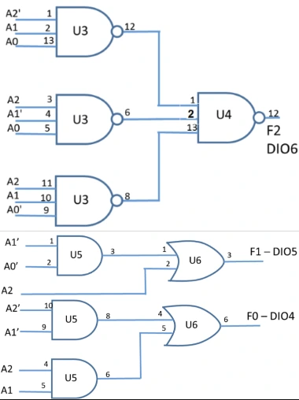
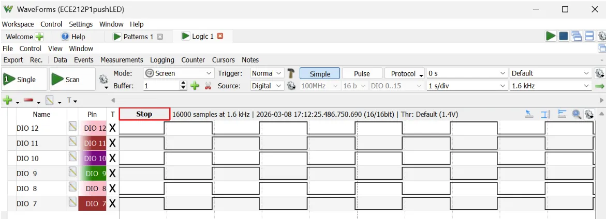
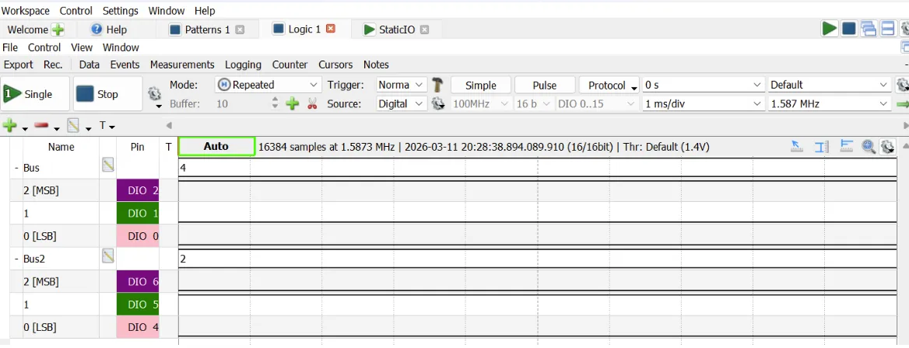

This is project served as my intro into hardware and firmware. Changing parts and tuning for perfect prints familiarized me with developing firmware, hardware compatibility, and how a systems environment can impact it.
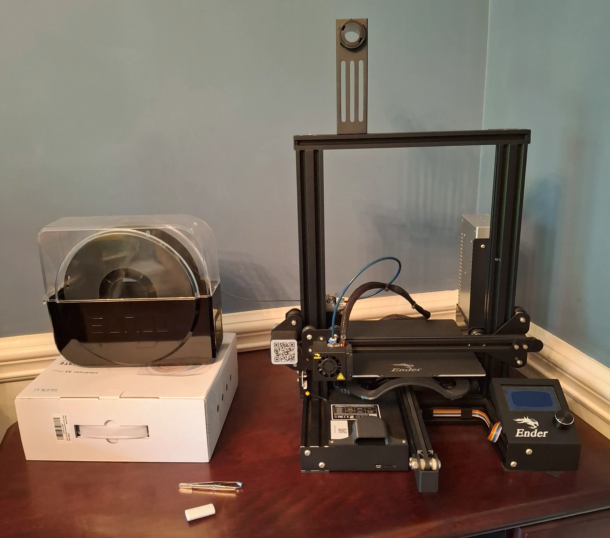
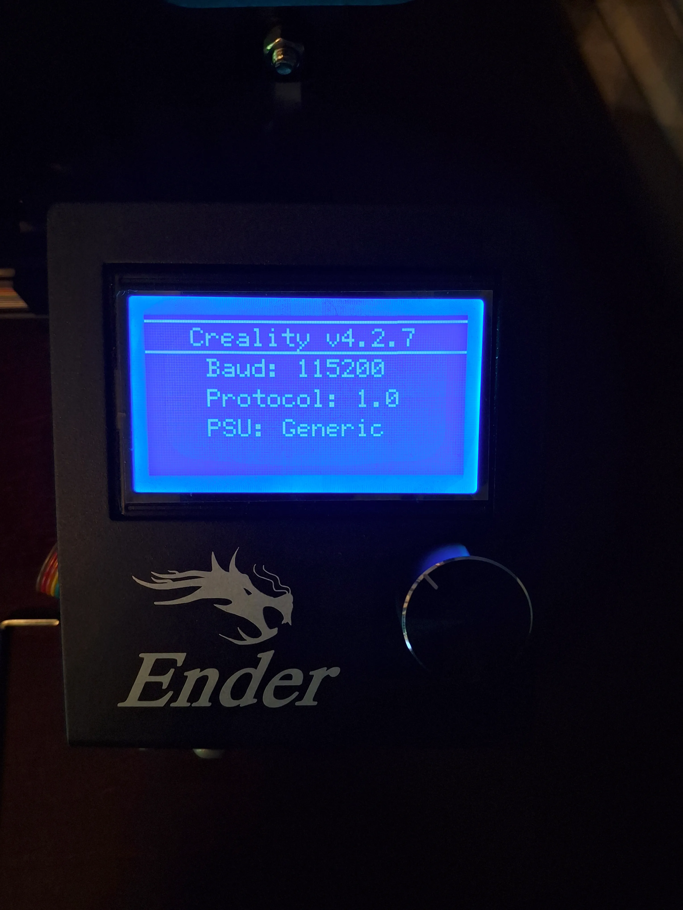
This project is an ESP-32 based smartwatch. Current design choices include utilizing the ESP-32 for its built-in BLE and thorough documentation, and a battery charging IC for power management and easy rechargeability and usage. Updates will be posted as soon as they are available.
The objective of these projects were to improve my understanding and application of C and to utilize differing data structures for different tasks. The programs are:
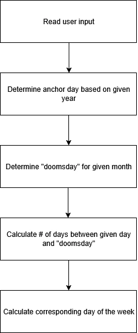
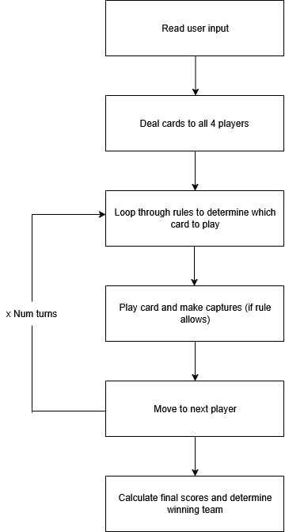
Throughout this course, we focused on understanding LC3 Processors, Assembly Language, and register manipulation in order to code different programs in LC3 Assembly. These programs ranged from:
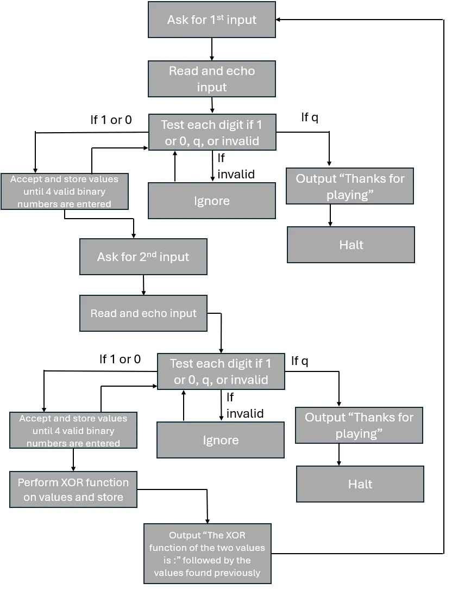
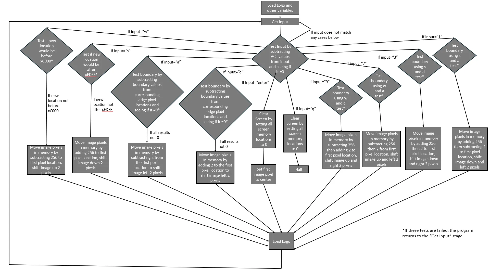
Throughout this course, we learned the basics of MATLAB and how to utilize it optimally to analyze data. In order to demonstrate mastery, we scripted:
These scripts were designed to solve complex mathematical problems geared towards teaching me ECE math concepts. They also often times included graphs, which taught the importance of visualization.
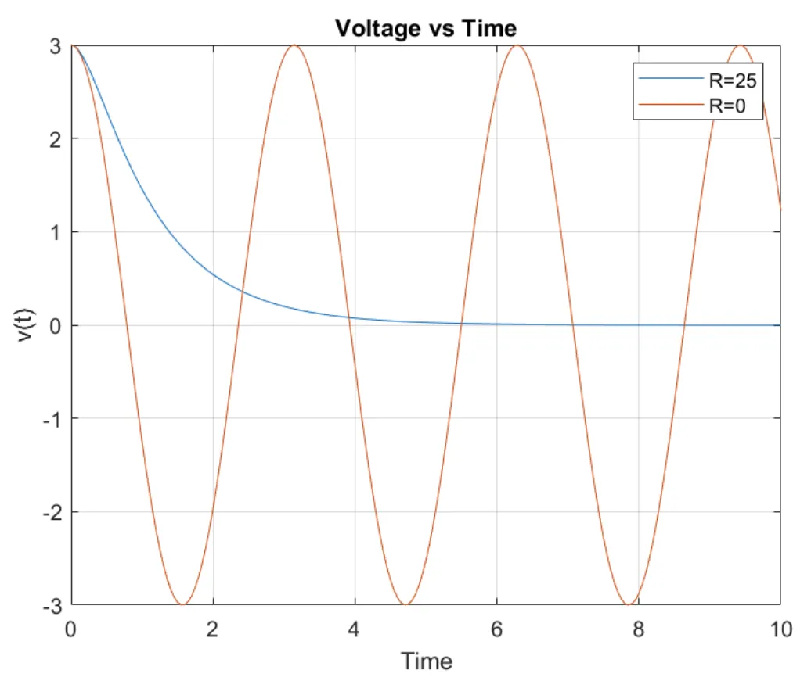
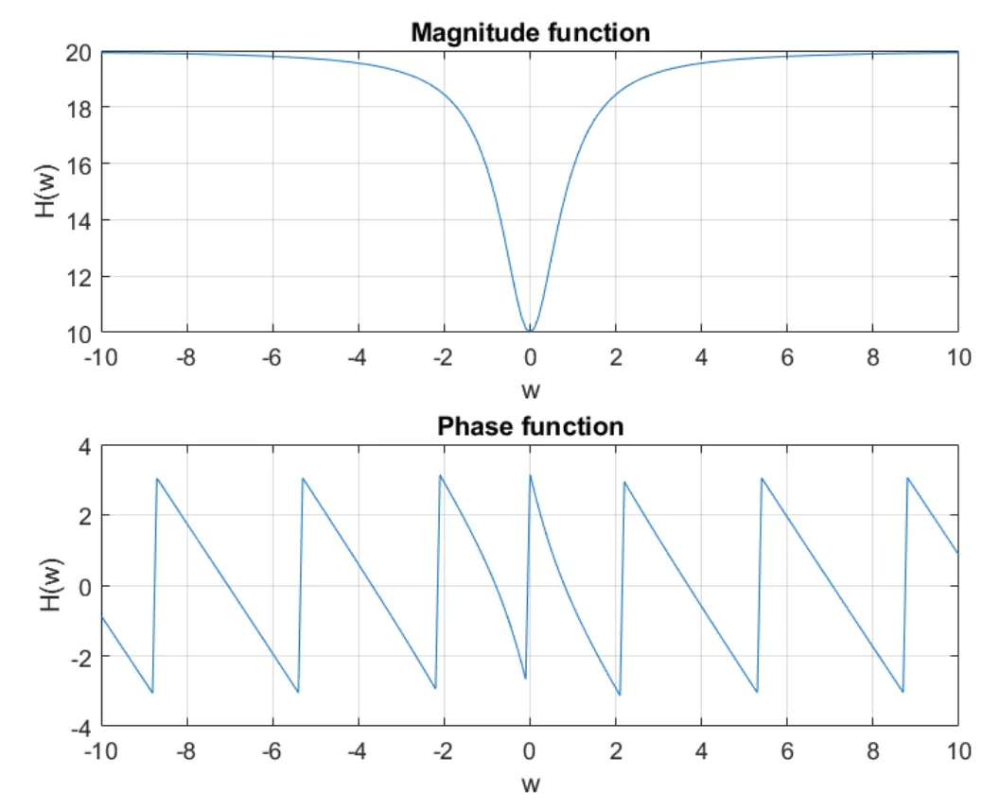
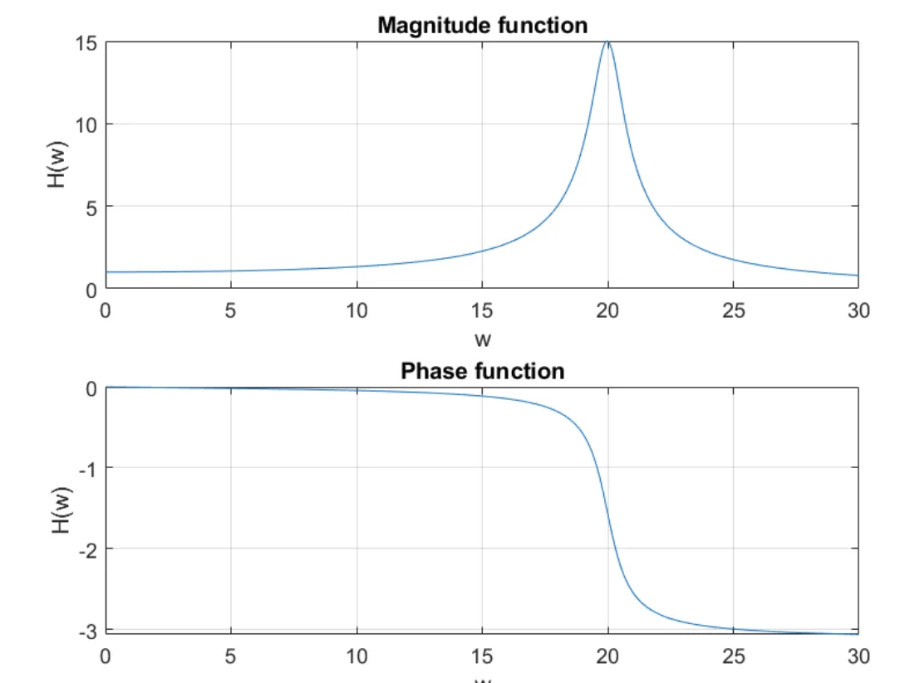
This project is meant to display all of my other projects and serve as a one stop shop for recruiters and hiring managers interested in me. Using Github for hosting, Git for version control,
and HTML and CSS to build it, I hope to market myself the best I can. Email me any feedback you may have for the website. The repositiory can be viewed here .
.

In my free time (or when I have a problem I can solve), I like to work on all types of coding projects. All/most of those projects can be seen on my Github profile.
The purpose of this project was to collaborate as a team to create a physical product and demonstrate it at Freshman Engineering Design Day, a freshman event at NC State. Me and my team had to develop a multitool that one would bring on vacation, and so we landed on an umbrella holder with cup holders. We worked together to fabricate the physical product and produce a presentation to debut the product.


For this project, me and my group members conceptualized an external chute for our Engineering Grand Challenge, carbon sequestration, in factories and other industrial settings. This project taught me a lot about teamwork, communication, project management